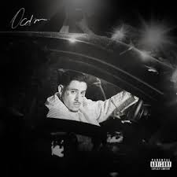

Composição: MC PH / MC Hariel / Mc Don Juan.
ETERNOS ALUNOS
LETRA DA MÚSICA
(Ooh) minha ambição é juntar vários milhão (vários milhão)
Voar sem tirar os pés do chão (os pés do chão)
Sonhar pra ter realização
Ver que o que plantei não foi em vão
Isso aqui nunca foi só por cifrão
Descarrego sentimento e emoção (emoção)
Já vejo minha mãe numa mansão
Vou lutar até pifar o coração
É que os primeiros cem mil, quando cai na sua conta, é inesquecível
Primeiro você torra, aprende, investe e cresce de nível
Só não se deixe levar que tudo pode mudar se você mudar seu rumo
Se não escuta sua mãe, a vida vai te ensinar, somos eternos alunos
Acendo um beck e fumo
Não consumo aquilo que me consome
Dá minha parte do acordo que eu sumo
Eles tentam, nunca vão ser meu clone
Acendo um beck e fumo
Não consumo aquilo que me consome
Dá minha parte do acordo que eu sumo
Eles tentam, nunca vão ser meu clone
Sinceramente, eu tenho que ser transparente
É o mais chique e elegante possível de ser
Mas mesmo assim eu vou lançar várias corrente
Com os emblema no pingente, impossível não ver
Vários se apega e da no pé, mas não vou fraquejar
Quero dinheiro e melhoria, uma vista pro mar
Sagacidade pra ir, com riquezas voltar
Agradecer, todas as vezes, sempre que acordar
Então vai, comunica lá que aqui sobra disposição
E ela fez passar a casa do primeiro milhão
As pancada da vida é o que formou um campeão
Enfia no seu cu o prêmio de consolação
Com a maldade que eu me criei, hoje eu quero distância
Com o que é bom eu aprendi qual era a importância
De ser real num mundo podre e cheio de ganância
E às vezes, nos frascos mais simples, as melhores fragrâncias
Se pessoas viram produtos, só mercado gosta
Giram na base da propaganda enganosa
Pelo meu sonho, continuo tocando minha obra
Nós é os cara do momento e o PH confirma a história
Minha ambição é juntar vários milhão (vários milhão)
Voar sem tirar os pés do chão
Sonhar pra ter realização
Ver que o que plantei não foi em vão
Isso aqui nunca foi só por cifrão
Descarrego sentimento e emoção (emoção)
Já vejo minha mãe numa mansão
Vou lutar até pifar o coração
Olha só como o mundo gira
Lotando as casa de show, deixei vazia a minha
Fui buscar um carvão pra em casa ter churrasco
Eu fiquei rico cedo, eu mudo vidas quando eu subo no palco
Eu já até pensei em parar, só eu ia me prejudicar
Mantive forçar pra lutar, por isso eu tô aqui
Uns acha que é só contar, gastar dinheiro
Mas não sabe o que se passa na mente de um MC
Que ainda é desacreditado, vai ajudar os necessitados
Orei pra Deus, Ele me ouviu, tira a maldade de perto de mim
PH e Hari no feat, é até difícil de pensar
Por isso que eu chamei o DJ, e nessa eu vim de free
(Uh) pela minha família eu mato e morro
Atrás de um homem, eu vi um menino que teve que engolir o choro
Tantos anos na pista, ainda sou menino novo
Não me canso atrás de dinheiro, o que é meu ainda esta por vir
Minha ambição é juntar vários milhão (vários milhão)
Voar sem tirar os pés do chão
Sonhar pra ter realização
Ver que o que plantei não foi em vão
Isso aqui nunca foi só por cifrão
Descarrego sentimento e emoção (emoção)
Já vejo minha mãe numa mansão
Vou lutar até pifar o coração
SIGNIFICADO DA LETRA
A expressão 'eternos alunos' simboliza a ideia de que a vida é um constante aprendizado
e que, mesmo diante do sucesso, sempre há mais a aprender e a melhorar.
A música, portanto, é um hino à perseverança,
ao crescimento pessoal e à sabedoria adquirida ao longo da vida.